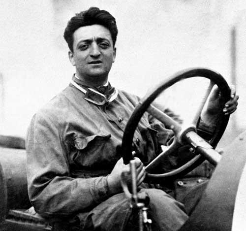
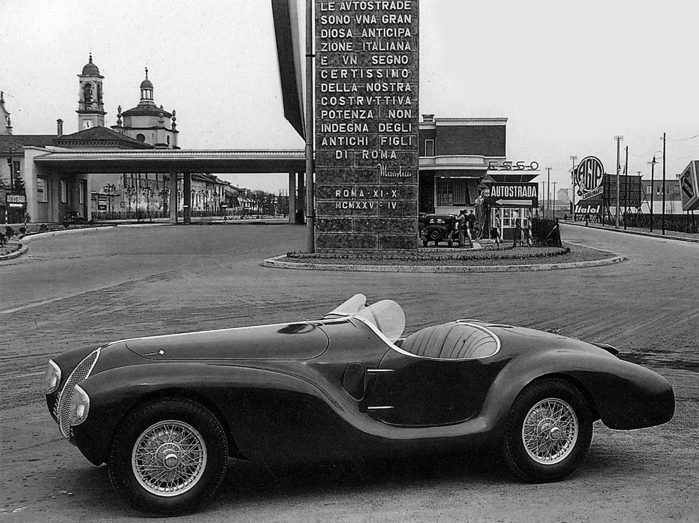
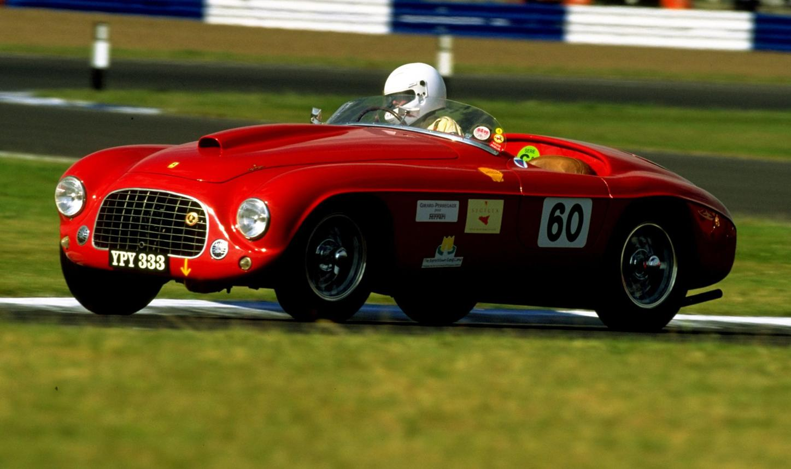
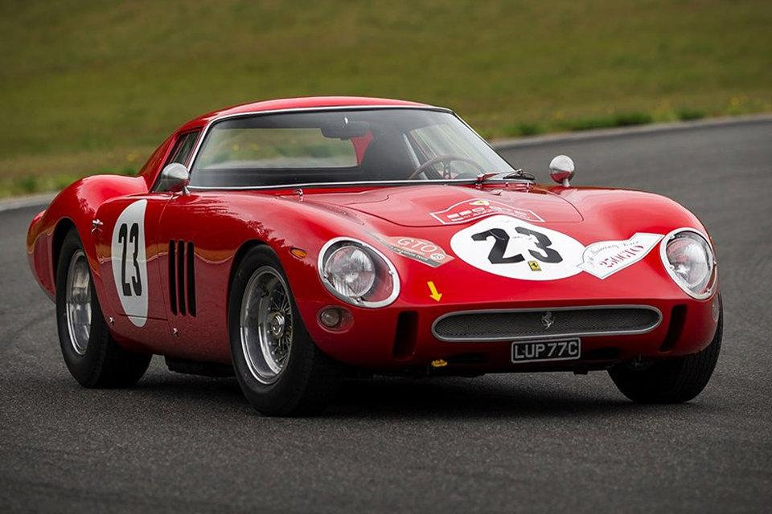
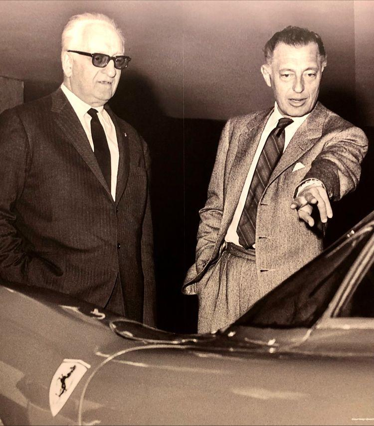
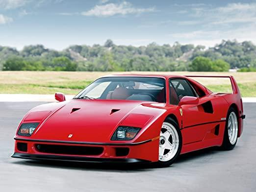
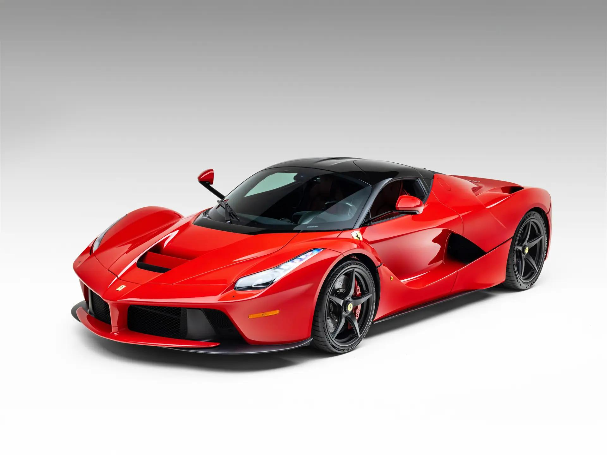
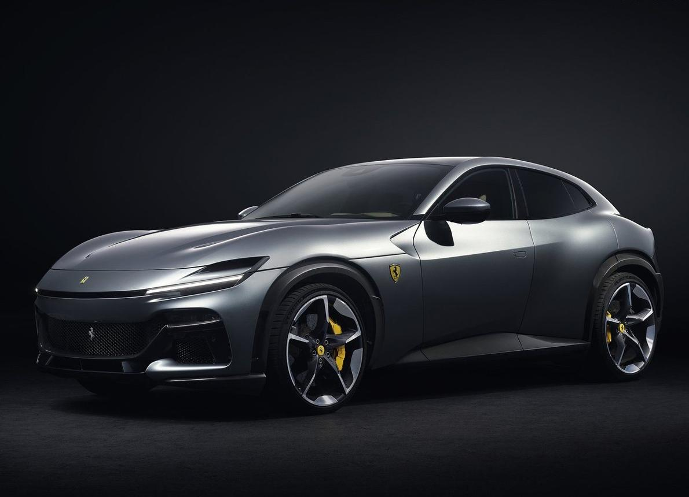
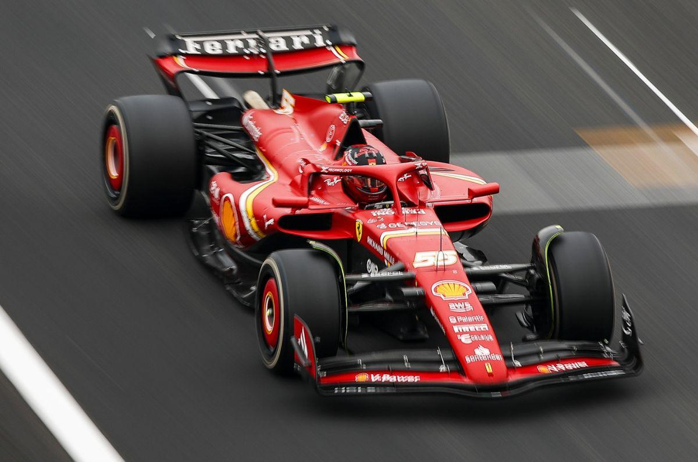
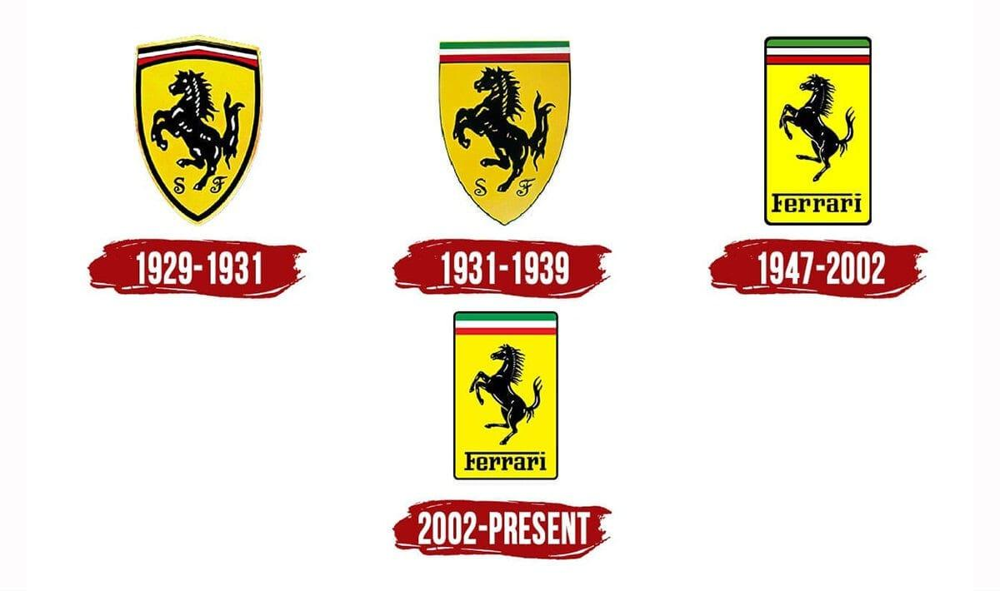

Enzo Ferrari naît le 18 février 1898 à Modène. Dès son plus jeune âge, il est fasciné par les automobiles et les courses. Après avoir participé à la Première Guerre mondiale, il devient pilote automobile pour plusieurs équipes italiennes. En 1920, il rejoint Alfa Romeo, où il court en compétition et acquiert une solide réputation. En 1929, il fonde la Scuderia Ferrari, une écurie de course chargée de préparer et d'engager des voitures Alfa Romeo dans les compétitions. À cette époque, Ferrari ne fabrique pas encore ses propres voitures : l'entreprise est uniquement tournée vers le sport automobile.

En 1939, Enzo Ferrari quitte Alfa Romeo et crée sa propre entreprise : Auto Avio Costruzioni. En raison d'un accord avec Alfa Romeo, il n'a pas le droit d'utiliser son nom pendant plusieurs années. En 1940, il construit sa première voiture, la 815, mais la Seconde Guerre mondiale interrompt rapidement le développement de l'entreprise. Après la guerre, Enzo installe son usine à Maranello. En 1947, Ferrari présente la 125 S, la première voiture à porter le célèbre nom Ferrari. Équipée d'un moteur V12 conçu par Gioachino Colombo, elle remporte rapidement plusieurs courses et lance officiellement la légende Ferrari.

Dans les années 1950, Ferrari devient l'une des équipes les plus performantes du sport automobile. La marque remporte les prestigieuses 24 Heures du Mans, la Mille Miglia et s'impose également en Formule 1. Ferrari construit aussi des voitures de route afin de financer son activité en compétition. Parmi les modèles les plus célèbres figurent la 166 MM, la 250 Europa et la 250 Testa Rossa. Les voitures Ferrari sont déjà réputées pour leurs moteurs puissants, leur élégance et leurs performances exceptionnelles.

Les années 1960 représentent un âge d'or pour Ferrari. En 1962, la marque lance la légendaire 250 GTO, aujourd'hui considérée comme l'une des voitures les plus rares et les plus chères du monde. Produite à seulement 36 exemplaires, elle domine les compétitions GT et devient une véritable icône. Certaines Ferrari 250 GTO se sont vendues pour plus de 50 millions de dollars, faisant d'elles parmi les voitures de collection les plus précieuses de l'histoire.

À la fin des années 1960, Ferrari manque de moyens financiers pour continuer à se développer. En 1969, le constructeur italien Fiat rachète 50 % de l'entreprise (cette participation augmentera par la suite). Grâce à cet investissement, Ferrari peut moderniser ses usines, produire davantage de voitures et continuer à dominer les compétitions automobiles tout en développant de nouveaux modèles destinés au grand public.

À partir des années 1970, Ferrari enchaîne les modèles devenus légendaires. Parmi eux :

Le XXIᵉ siècle marque une nouvelle période d'innovation. Ferrari lance plusieurs modèles emblématiques :

Aujourd'hui, Ferrari reste l'un des constructeurs automobiles les plus prestigieux au monde. Les modèles récents comprennent :
Ferrari investit également dans les technologies hybrides et prépare l'arrivée de sa première voiture entièrement électrique, tout en conservant son identité axée sur la performance, le luxe et l'exclusivité.

La compétition est au cœur de l'histoire de Ferrari. La Scuderia Ferrari est la plus ancienne équipe encore présente en Formule 1. Depuis 1950, elle a remporté de nombreux championnats du monde avec des pilotes légendaires comme :
En 2023 et 2024, Ferrari a également retrouvé le succès en endurance avec la 499P, victorieuse des 24 Heures du Mans.

